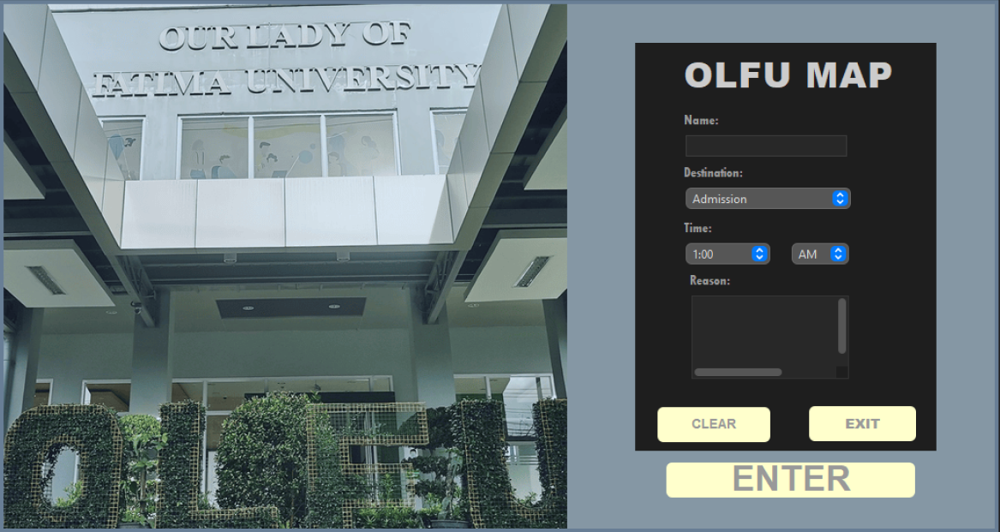
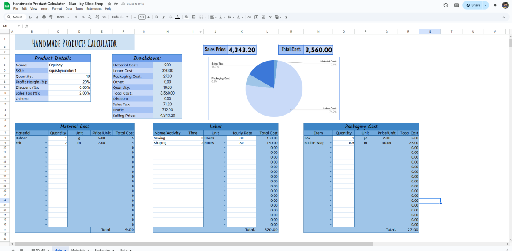
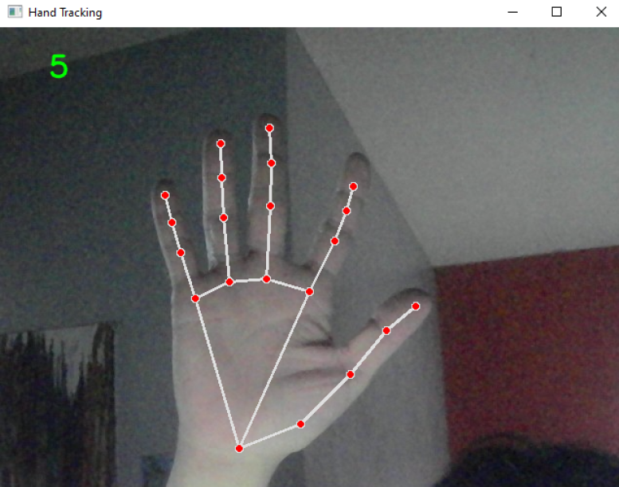
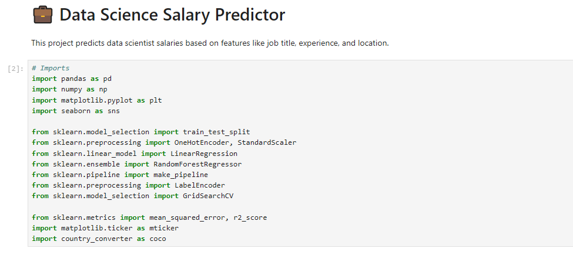

Hello I'm
Harry
a 3rd CS student diving into data science, machine learning, and app development — one project at a time.
About me:
A dedicated and passionate computer science student ready to tackle and solve real-world problems with strong
skills in programming, data science, and app development. Eager to apply technical skills in real-world
projects and grow through opportunities in the field.
Skills:
Programming Languages:
- - Python
- - Java
- - C
- - SQL
- - HTML & CSS
Tools and Technologies:
- - Visual Studio Code
- - MySQL
- - Android Studio
- - Google Sheets (Advanced)
- - Netbeans
Data Science and Analytics:
- - Data Cleaning & Preprocessing
- - Data Visualization (Matplotlib, Seaborn)
- - Exploratory Data Analysis (EDA)
- - Machine Learning (scikit-learn)
- - Statistical Analysis
- - Jupyter Notebook
- - Pandas, NumPy
Currently Learning:
- - Fundamentals of Artificial Intelligence
- - Machine Learning Algorithms
- - Neural Networks and Deep Learning
- - Applied AI Lab: Deep Learning for Computer Vision
- - Natural Language Processing (NLP)
- - AI Ethics and Responsible AI
- - Python for AI
- - AI Model Evaluation and Deployment
- - Tools: TensorFlow, Keras, PyTorch, OpenCV, Scikit-learn
- - Hands-on: CNNs for image classification, object detection, transfer learning
- - Concepts: AI fairness, model interpretability, problem-solving
Projects:

OLFU - Sta. Rosa Map
Designed a campus map application for OLFU to help students and visitors navigate key locations within the
campus.
-Java, Netbeans-
Student Performance Tracker App (Ongoing Thesis Project)
Developing a mobile app that analyzes students study habits and provides academic performance
recommendations using a machine learning model.
-Android Studio, Python, Jupyter Notebook, Firebase-

Handmade Products Calculator
Built a dynamic pricing calculator for handmade products to determine costs, profit margins, and selling
price. Used formulas, conditional formatting, and drop down logic for usability
-Google Sheets-

Hand Detection AI
A simple program that detects hands and counts how many fingers are up
-Python, OpenCV, MediaPipe, NumPy, Jupyter-

Data Science Project: Salary Prediction Using Random Forest Regression
Built a regression model to predict tech industry salaries based on job role, location, experience level, and employment type. Tuned hyperparameters using GridSearchCV and analyzed feature importances to interpret model results.
-Python, Pandas, Scikit-learn, Matplotlib, Seaborn-
Certificates:
-
Applied Data Science Lab | May 18, 2025
World Quant University
-
Optimizing MySQL Performance for High Efficiency | May 9, 2025
Koenig Solutions
-
The Cutting Edge: Trends Shaping the Future of Computing | May 18, 2024
Our Lady of Fatima University - Santa Rosa
-
Tackling Risk & Understanding Security in AI Technology | May 6, 2023
Our Lady of Fatima University - Santa Rosa
Achievements:
- Consistent Deans Lister for the past 3 semesters
- 3rd Place CS Quiz Bee - OLFU CCS Intercampus 2025
- 1st Place CS Quiz Bee - OLFU CCS Intercampus 2024
- Champion CCS Quiz Bee - OLFU Laguna 2023
- 2nd Place CCS Quiz Bee - OLFU Laguna 2022